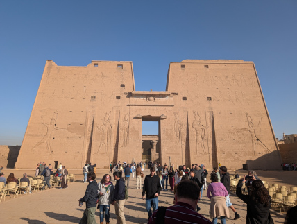
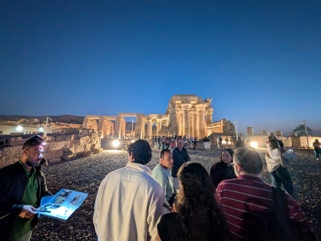
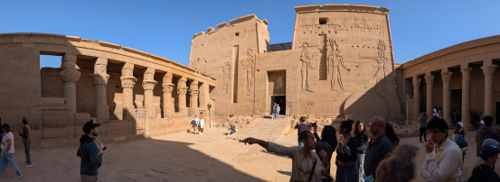

When you go to Egypt, you almost always need a cruise down the Nile River! When you take one with a tour guide, they will always know the best places to go at each stop. Plus, you get to relax on the Nile and see the sights from the river.
The Beginning Of the Cruise
There are a lot of cruise ships to choose from, but make sure you look at what other people have said, as that might give you a hint about what the best option is.

The Temple of Horus
Real name The Temple of Edfu. It is dedicated to Horus and Hathor. When the Greeks took over, they swiched horus out with Apollo. It is one of the best preserved shrines in Egypt.

The Kom Ombo Temple
A beautiful temple dedicated to multiple gods. The building is unique because its 'double' design meant that there were courts, halls, sanctuaries and rooms duplicated for two sets of gods. The gods it is dedicated to are Horus and Sobek.

Philae Temple
The Philae Temple complex is interesting in the fact that it's not in its orignal location. It was moved to protect it from the flooding after the Aswan Lower dam was put in. It is dedicated to the goddess Isis.
